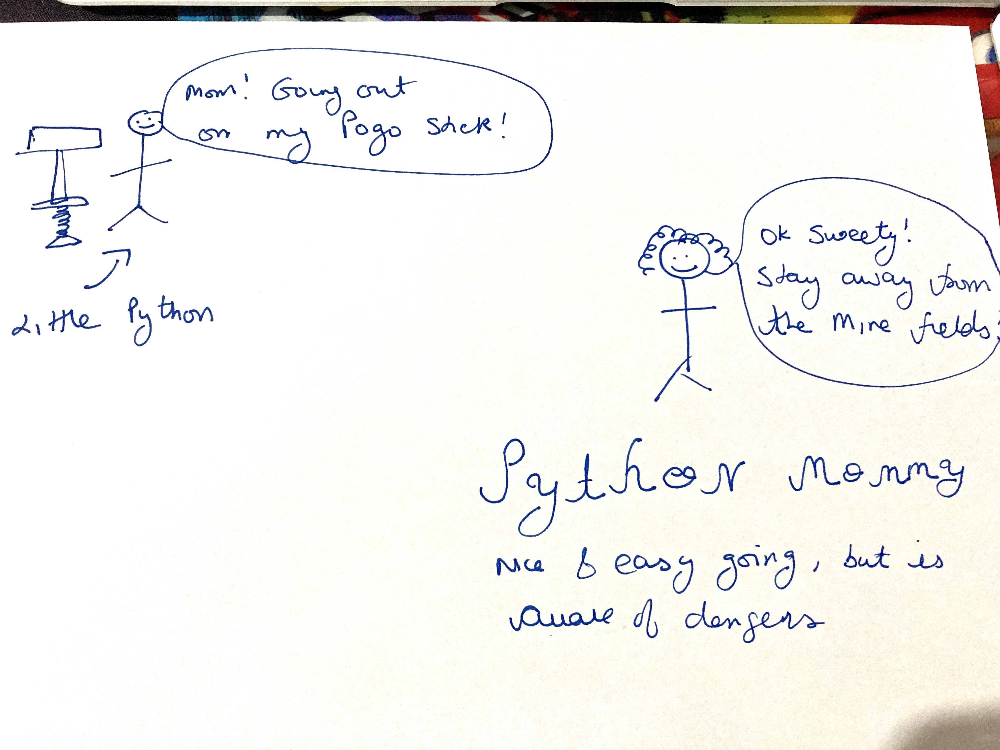
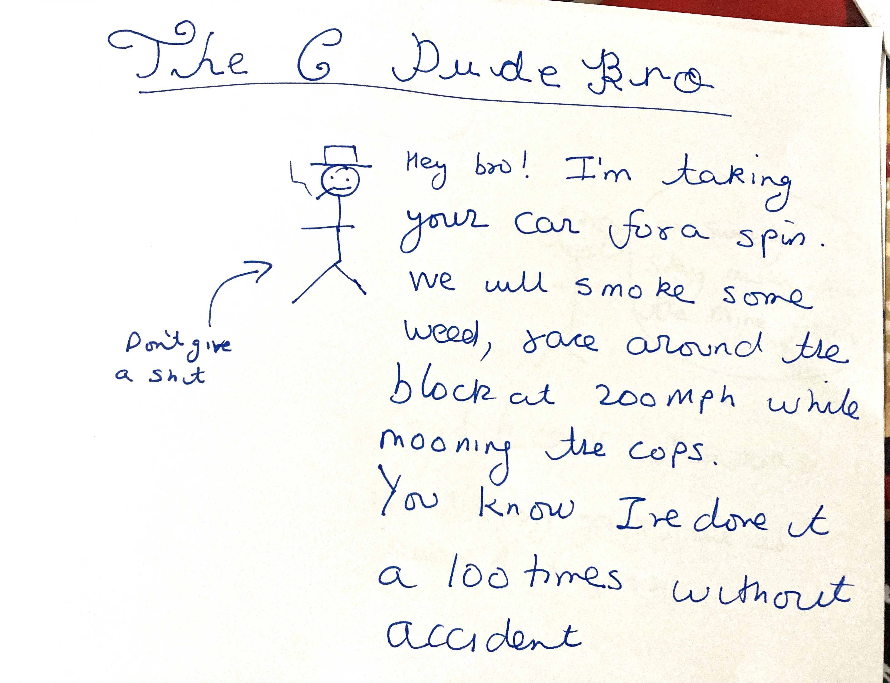
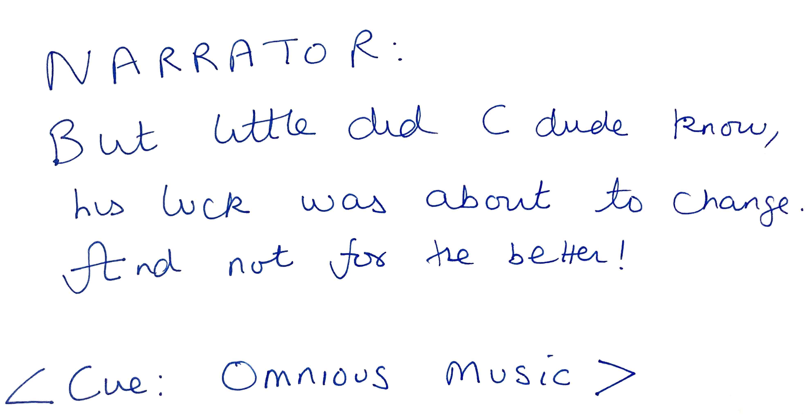
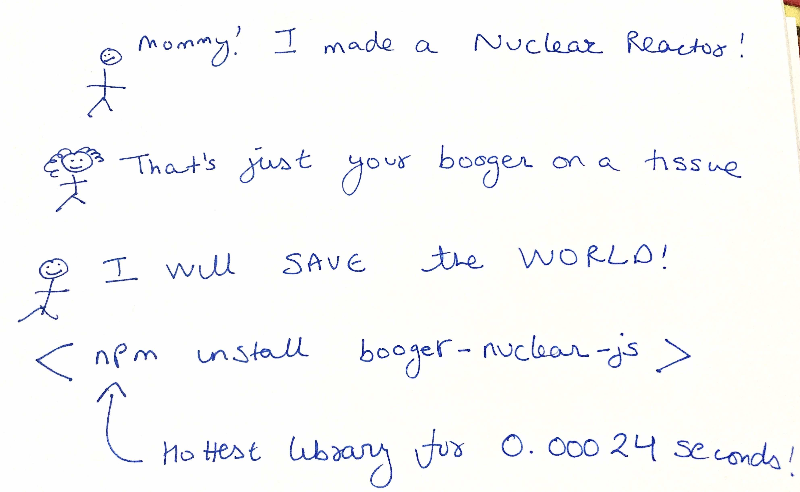
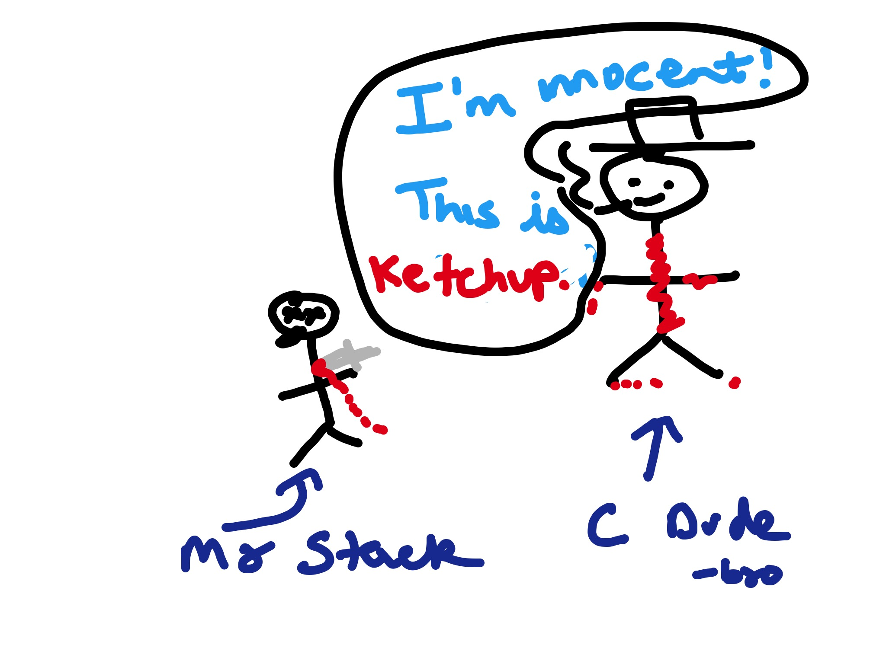

For many years, I fought learning Rust, seeing it as yet another Over-Hyped-Language(TM). A language favoured by the Hipster Bro-gramming dudes who were out to Stick it to Da Man. And so for a long time, I avoided learning this hippy language everyone wouldn't shut up about.
Yet when I tried it, it was a ...refreshing change. Like every Bollywood director says about their movie, it is different and unique.
So is learning Rust worth it? To answer this question, I could give you a list of pros and cons and lots of blah blah blah about Rust's low level features, which is what most everyone does; but I thought it would be better to compare Rust to a few other languages out there. Specifcially:
So by comparing Rust to C, Python and Javascript, I hope to show you where Rust shines, and why its so gosh darn hard to learn.
(
I'm using some poorly drawn comics in this article, in a desperate attempt to be funny and likeable. I got the idea from Julia Evans.
If you hate the comics, please send me a message I and I will take them down. Click here to contact me, I appreicate honest feedback.
)
Imagine 3 people: Littly Johnny Python, Dude-Bro C, and Mummy Rust.
All 3 want to go for a walk.
Little Python

Little Python is the one pogo-sticking for fun. Python mommy is cool with it, as long as he stays away from the minefields.
Then we have this guy:
C Dude Bro
Permanently stoned, this dude bro don't respect no authority.

He knows he's cool. Will race his car around the block at 200MPH, while mooning the cops, while drinking rum. Hey, he's done it a 100 times without any harm so far!

C lets you do whatever you want, no one cares.
Until it call comes crashing down on you. But hey, you're the one who wanted to stick it to Da Man!
And finally, we have out Hero:
Rust
Rust Mommy is STRICT. She won't let little Rusty go out for a walk without aeroplane insurance, just in case a plane crashes on him while he's out walking.
And that's Rust's biggest strength, and weakness-- it is super strict. Anything that can go wrong, WILL go wrong (don't look at me, Rust mommy said so).
You want to do something simple, like open a goddamn file and read it?
The file open can fail, so you have to cope for it.
The file is opened? The read can fail, you have to cope with it.
You read the file? Well, it could be in a strange format Rust can't recognise. COPE WITH IT!
For Rust mommy, anything that can go wrong, will go wrong
And yes, in Python you can do try catchs, (as in other languages), but you can skip them if you're in a hurry.
Not in Rust.
EVERY error must be handled, or the compiler will stop you. My first Rust program, to read a few lines from a file, took me a few hours and a lot of tears.
Let's come to Javascript for a moment. You know, this kid:

You could literally put your booger (you know, the disgusting thing that comes out of your nose) on a tissue, create a npm package out of it and get a million downloads in 3 days.
Next you know, Google is using your booger-nuclear-js library, and the whole internet is down when you sneeze. Bless you.
I've been trying to learn Javascript for a long time, but keep quitting. Because I learnt, JS has the exact same problem Rust has:
Please read the below in Darth Vader's voice
Both the languages tutorials expect you to read the language specs, every single goddamn feature and specification, and then figure out what to do with it
I dont know why, but expect for 1-2 notable exceptions, EVERY Js tutorial, book, course, paid or free, starts with: Here are the 9 million commands JS supports, we will now start at page 0 and go from there.
And Rust does the same. It's all Read the Rust book, blah blah blah
The reason I struggled with JS: I've got 15 years experience professionally, 25 if you count when I actually started programming as a teenager. I know what a for loop is. Why can't I learn something practical?
Rust suffers from the same problem, the Read the specs and figure out what to do with it
This is one of my pains, and one of the reasons I started this site: To fix this, to actually build somethign useful.
Python rules in this arena-- awesome turorials, lots of practical stuff you can build, everything from games to video processing to mahcine learning.
But back to Rust. It does have a few good points.
By safety, I mean memory safety, protection from stack smashing etc.
Python - is ok, I guess.
C:
Where do I start?
Imagine a locked room murder mystery. Our victim, Mr Stack is lying dead on the floor. The detective comes in and asks, are there any suspects? Everyone looks at C. He's covered in blood, but insists it's ketchup.

And finally, we have Rust:

Rust mommy will send in the 101st Ariborne division to protect little Rusty as he goes about his walky-walky.
Rust is so strict, it won't even let you compile if it suspects there is a memory or race issue.
In my limited experience, this leads to some unecessary complex and verbose code, but you get used to it.
And you know your code won't randomly crash on midnight at Saturday.
Javascript: Millions of "standard" libraries, and thousands more added every minute! At least running the code is easy, you put it an HTML file...
.... no you don't, and no it isnt easy. You have to start a local server and shit(security?). Or spend hours figuring out npm, and why you need 20 versions of it, because each library only works on one and only one version.
And one Genius library wanted me to install Python 2.7. Why do I need Python 2.7 to run a goddamn JS library? Use the same language on the front and backend my ass.
Python
Python does have a good ecosystem for libraries. Distribution, on the otehr hand...
There must be one and only one way to do something. Explicit is better than implicit
--Zen of Python -- which hasn't been true for 10 years.
Modern Python:

There are 20 ways to install Python and its libraries, a dozen ways to check for linting / type errors, code formatting etc. There are 5 ways to create isolated environments.
And if you want to share your code with others, boy are in for some fun. Dozens of ways, all have their quirks, all can fail randomly.
Python is the ultimate Runs on my machine Language
(Click here to send me angry rants if you find the above statement offensive)
Even Uncle Perl laughs at Python nowadays:

C
Ecosystem: HAHAHAHAHAH
Distribution: In theory, you can just compile your code.
In practice- spend hours installing some weird library that hasnt been updated since 1985, but is a dependency for some reason. Find you can only install the library by adding a weird apt repo some guy maintains in his mom's basement.
Bonus Then take that shitty library and create a Python module on it, so Python programmers can cry with you.
Rust
Maybe because Rust is still new-ish, but boy, it's ecosystem and distribution is AWESOME.
cargo learnt from many of the problems of previous package managers. One tool to start a new project, format your code, check for errors and compile. And (like Go) can compile for any platform.
Cargo is the reason I found Rust so easy to use. Unlike Javascript or even Python, it isnt something that has been bolted on and gone through a dozen hacks to please everyone and his grandma. No, Cargo is a part of Rust, and works great with it.
You use Rust and Cargo, everything is so smooth-- it just works.

Rust is Hard to learn:
But Rust is also:
One of the problems I mentioned was: Rust is taught by Read the Rust book, then figure out what to do
I prefer to learn via practical examples, and am planning to write a series of tutorials on building practical projects in Rust. So far, have planned the Linux find and grep utilities, a simple shell, all in Rust.
Later on, will add more projects, maybe ported from my book Python for Engineers
If this interests you, please sign up below to know when the first article will be out.